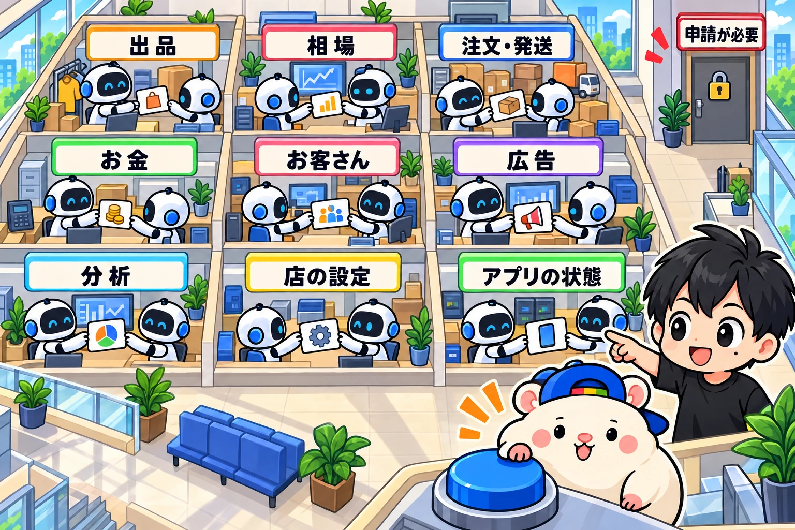

eBayのAPIでできることを、ぜんぶ書き出します。
APIというのは、eBayの画面を通さずに、プログラムから直接eBayに仕事を頼める窓口です。
ぼくの店は、この窓口を毎日10種類つかっています。
出品も、値付けも、在庫も、お客さん対応も、ここを通ってAI社員がやっています。
でも、全部の窓口が開いているわけではありません。
ぼくは「売れた商品のデータ」が欲しくて、eBayに2回申請しました。
2回とも、断られました。
この記事では、
・eBayのAPIで何ができるか(全部)
・申請すると何が広がるか(そして、どれくらい狭き門か)
・AIとAPIをつなぐと、店がどう回るか
を、うちの店の実例つきで書きます。
そもそもAPIとは
たこ焼き屋でたとえます。
ふつうのお客さんは、店の前に立って「6個ください」と言います。
これが、eBayの画面をひらいて操作するやり方です。
APIは、業務用の注文口です。
決まった書式の注文票を出すと、何百人分でもまとめて受けてくれます。
しかも、24時間あいています。
人間が画面で1件ずつやっていた出品や値下げを、プログラムが注文票で一気に出す。
その注文票を書くのが、いまはAIです。
eBay APIでできること、全部

eBayの公式サイトに載っている窓口を、仕事ごとに9つに分けました。
★は、ぼくの店で毎日つかっている窓口です。
1. 出品する
- ★Inventory API: 出品を作る・直す・終わらせる。価格と在庫数を、まとめて一気に書きかえる
- ★Trading API: 昔からある窓口。商品の情報を取る、説明文を直す、画像を上げる、出品を終わらせる。eBayは少しずつ新しい窓口に移していて、新しく作るなら新しいほうをすすめています
- Media API: 画像・動画・書類(規制で必要な書類など)をeBayに上げる
- Catalog API: eBayの商品カタログから、同じ商品をさがす。カタログに紐づけると、タイトル・項目・説明・商品画像が自動で埋まる
- ★Taxonomy API: どのカテゴリーに出すべきか、そのカテゴリーで必要な項目は何かを調べる
- Metadata API: カテゴリーごとのルールを調べる(使える商品の状態、バリエーション出品ができるか、危険物の表示など)
- Translation API(試験版): タイトルと説明文を、別の言語に翻訳する
- Feed API: ファイルで、出品をまとめて上げる。レポートをまとめて落とす
- Stores API: ストアのカテゴリーを作る・名前を変える・動かす・消す
- Inventory Mapping API(新しい窓口): 写真やタイトルを渡すと、eBayのAIが出品の案(カテゴリー・項目・説明文)を作って返す。いまは米国のみ・1日20回まで・自動車部品は対象外
出典: eBay Developers Program「Inventory Mapping API」(2026年9月28日閲覧)
2. 相場を調べる
- ★Browse API: いま出品されている商品を、キーワード・カテゴリー・型番・画像でさがす。1件ずつの詳しい情報も取れる
- Marketplace Insights API: 売れた商品のデータを取る。申請が必要で、ほぼ通りません(後で書きます)
3. 注文と発送
- ★Fulfillment API: 注文を取る。追跡番号を登録して「発送済み」にする。支払いのトラブル(ペイメントディスピュート)に対応する
- Post-Order API: キャンセル、返品、問い合わせ、ケースに対応する
- Logistics API: 送料の見積もりを取って、ラベルを作る(申請が必要)
- eDIS API: 中国・香港・台湾のセラー向けの発送サービス用(日本のセラーは使えません)
4. お金
- ★Finances API: 入金の予定と実績、注文ごとの手取り、手数料、返金、送料ラベル代を取る
5. お客さん対応
- Message API: お客さんとのやりとりを取る・送る・既読やアーカイブにする
- Feedback API: 評価を取る・つける・評価に返信する。評価待ちの取引の一覧も取れる
- ★Negotiation API: ウォッチした人や、カートに入れて買わなかった人に、値下げのオファーを送る
- (★Trading APIでも、メッセージの取得・返信、Best Offerの取得・返事、評価をつけることができます。ぼくの店はこちらを使っています)
6. 広告・セール
- ★Marketing API: 広告(Promoted Listings)を作る・止める、広告率を変える。セール(Discounts Manager)を作る。ストアのメールキャンペーンを送る
- Recommendation API: どの出品に広告をかけるとよいか、eBayのおすすめを取る(米国・英国・ドイツ・オーストラリアのみ)
7. 分析
- ★Analytics API: 出品ごとの表示回数・閲覧数・売れた割合(トラフィックレポート)、セラーレベルの評価、お客さん対応の指標を取る
8. 店の設定
- ★Account API: ビジネスポリシー(支払い・返品・発送のルール)を作る・直す。出品できる枠の残りを見る
- Notification API: eBay側で起きた出来事を、こちらに知らせてもらう
- Compliance API: eBayのルールに合っていない出品を一覧で取る
9. アプリの状態
- Developer Analytics API: 今日あと何回、窓口を使えるかを見る
買う側の窓口(ほぼ申請制)
- Order API: eBayの商品を、自分のサイトやアプリから買えるようにする
- Offer API: オークションに入札する
- Deal API: eBayのセール情報を取る
- Feed API(買う側): 商品データをファイルでまとめて取る
このうち買う側の多くは「限られた開発者だけ」の窓口です。
アフィリエイトの仕組み(eBay Partner Network)を通して申請し、eBayと契約します。
公式にも「申請しても承認される保証はない」と書いてあります。
窓口ごとに「1日何回まで」が決まっている
APIは、何回でも使えるわけではありません。
窓口ごとに、1日の上限があります。
eBayの公式の数字です(個人・小さな会社向けの初期値)。
- Inventory API(出品・在庫): 1日200万回
- Negotiation API(値下げオファー): 1日100万回
- Fulfillment API(注文): 1日10万回
- Marketing API(セール): 1日10万回/(広告): 1日1万回
- Account API(店の設定): 1日2万5,000回
- Finances API(お金): 1日1万5,000回
- Browse API(相場): 1日5,000回
- Trading API: 1日5,000回
- Analytics API(トラフィックレポート): 1日100回
- Inventory Mapping API(AIの出品案): 1日20回
出典: eBay Developers Program「API Call Limits(Sell)」(2026年9月28日閲覧)
出典: eBay Developers Program「API Call Limits(Buy)」(2026年9月28日閲覧)
見てのとおり、差がすごいです。
出品と在庫の窓口は、ほぼ使い放題。
相場を調べる窓口は、1日5,000回しかありません。
ぼくの店は、これで一度止まりました。
7月27日、全商品の値付けを見直す社員が、相場の窓口を1件に1回ずつ使っていました。
出品が増えるほど、回数も増えます。
5,000回を使い切って、その日のリサーチが全部止まりました。
防ぎ方: 同じ型番・同じ状態の問い合わせは、6時間は結果を使い回す。
これで、リサーチに使える回数が5割ほど増えました。
申請すると、何が広がるか
eBayには「Application Growth Check(アプリの成長チェック)」という審査があります。
無料です。
この審査が必要なのは、2つのときです。
- 1日の上限を増やしたいとき
- 制限付きの窓口を、本番で使いたいとき
出典: eBay Developers Program「Application Growth Check」(2026年9月28日閲覧)
審査で見られるのは、たとえばこんなところです。
・ちゃんと動くアプリがあるか
・eBayのライセンス規約を守っているか(ほかのセラーの情報を集計しない、カテゴリー全体の平均売価を出さない、など)
・エラーのときの再試行は2回までにしているか
・お客さんのeBayのパスワードを集めていないか
・窓口ごとに、1時間と1日で最大何回使うか
ぼくの申請① 売れた商品のデータ(2回とも不可)
値付けでいちばん欲しいのは、「いくらで売れたか」です。
出品中の値段(Browse API)ではなく、売れた値段。
それが取れるのが、Marketplace Insights APIです。
6月27日に申請しました。
すぐに、8つの質問が返ってきました。
・会社とアプリは何か
・eBayのIDは何か
・アフィリエイトのパートナーか
・売れた商品のデータを何に使うか
・データを保存するか
・データを社内や社外で共有するか
・どのカテゴリーのデータが必要か
・連絡先
「自分の店の値付けと仕入れにだけ使う。保存しない。だれにも渡さない」と答えました。
7月12日の返事です。
「このAPIは、eBayが認めたパートナーだけに向けたもの。今回は許可できない」
eBay Developer Supportからの返信メール(2026年7月12日・宛名は伏せています)
8月にもう一度申請しましたが、通りませんでした。
ぼくの申請② 相場の窓口を5倍に(通りました)
9月7日、Browse APIの上限を1日5,000回から2万5,000回に上げてほしいと申請しました。
理由はシンプルです。
出品が、7月の約1,400件から、9月に約6,700件まで増えました。
毎日150〜250件ずつ増えています。
全商品の値段を1日2回見直すと、5,000回では足りません。
その日のうちに「確認中です」と返事が来ました。
1週間後に催促しました。
それから3週間。
この記事を書いた9月28日に、返事が来ました。
「審査に通りました。Browse APIの上限を、1日5,000回から2万5,000回に上げます」
断られた申請と、通った申請。ちがいは中身です。
売れた商品のデータは、ほかのセラーの売れ方まで見えるデータです。
eBayは「認めたパートナーだけ」に絞っています。
相場の窓口の回数アップは、自分の店の値付けに使う回数を増やすだけ。
出品数、1日に見直す回数、1時間に使う最大の回数まで、数字で書いて出しました。
それでも、申請が通る前提で店を作らない。
いまある窓口で回る形にしておく。
これが、2回断られて1回通って学んだことです。
申請の前に、全員がやること
もうひとつ、申請とは別に、全員に必須の手続きがあります。
eBayのユーザーが「自分のデータを消して」と頼んだとき、その知らせを受け取る窓口を作ること。
データを保存しない人は、「受け取らなくていい」という申請をすること。
どちらかをしないと、本番の窓口は使えません。
やらないまま放っておくと、使える窓口を減らされることがあります。
出典: eBay Developers Program「Marketplace User Account Deletion」(2026年9月28日閲覧)
AIとAPIをつなぐと、どうなるか
ここからが本題です。
APIは、昔からあります。
でも、個人のセラーにはほとんど使われていませんでした。
理由は1つ。
プログラムを書ける人しか、窓口に注文票を出せなかったからです。
いまは、ちがいます。
ぼくはClaude Code(クロード・コード)というAIに、日本語で頼むだけです。
「仕入れ先で在庫がなくなった商品は、eBayの在庫を0にして」
AIが、eBayの公式の説明書を読んで、注文票(プログラム)を書いて、実際に動かします。
何をやるかは自分で決める。
どうやるかはAIに聞く。
そしてAIに、APIを叩いてもらう。
AIに画面を操作させるより、APIのほうがいい理由
AIにブラウザでeBayの画面を操作させる方法もあります。
でも、おすすめしません。
- 遅い。1件ずつ画面を読み込むので、何千件は回らない
- 画面の見た目が変わると、止まる
APIは、eBayが「ここから入ってください」と用意した正面玄関です。
できることは、全部APIに寄せる。
これがいちばん安全で、いちばん速いです。
うちの店の実例7つ
① 出品(Inventory API)
リサーチ担当が見つけた商品を、出品担当がAPIで出品します。
多い日で1日281件。
これまでの出品は1万件をこえました。
② 在庫(Inventory API)
仕入れ先を10分に1回見て、売り切れた商品はeBayの在庫を0にします。
無在庫でいちばん怖い「売れたのに仕入れられない」を防ぐ係です。
③ 値付け(Browse API+Inventory API)
同じ型番・同じ状態の出品をBrowse APIでさがして、最安に合わせます。
直した値段は、Inventory APIでまとめて書きかえます。
④ お客さん対応(Trading API)
届いたメッセージをAPIで取って、AIが返信を書いて、APIで送ります。
13日で217通。
ぼくがさわったのは0通です。
⑤ 値下げ交渉(Trading API+Inventory API)
Best Offer(「この値段なら買う」という交渉)が来たら、原価・送料・手数料から赤字になる線を計算して、その上でカウンターを返します。
13日で26件、ぼくは1件も考えていません。
さらに毎日18時30分、664件の「自動で承諾する金額」を点検して、赤字になっていた49件を直しました(9月19日)。
⑥ ウォッチした人へのオファー(Negotiation API)
ウォッチしている人に、値下げのオファーを送ります。
ただし、送れる相手はeBayが決めます。
ウォッチ3人に送ったとき、届いたのは2人でした。
⑦ お金と分析(Finances API+Analytics API)
注文ごとの手取りを取って、経理担当が1円単位で利益を出します。
出品ごとの閲覧数も取って、どの商品が見られているかを見ています。
AIとAPIの、やらかし
いいことばかりではありません。
「成功」と返ってきても、中で失敗している
在庫と価格をまとめて書きかえる窓口は、1件だけ失敗しても全体では「成功(200)」を返します。
AIが「成功」を信じて帳簿に新しい値段を書き、eBay上は古い値段のまま。
8時間、だれも気づきませんでした。
防ぎ方: 1件ずつの結果を必ず見るように、AIに言っておく。
回数切れで、翌日まで止まる
Trading APIでも、8月10日に上限に当たりました。
300件中297件が失敗。
上限切れは、何回やり直しても当日は戻りません。
防ぎ方: 大量に使う作業どうしを、同じ日に重ねない。
はじめ方
- eBay Developers Program(eBayの開発者向けサイト)に、ふだんのeBayアカウントで登録する
- アプリのキー(窓口の合言葉)を作る。このとき、データ削除の知らせを受け取るか、受け取らない申請をする
- 自分のストアに「このアプリが操作していい」と許可を出す(OAuth)
- AIに「このキーで、ぼくの出品中の商品を一覧にして」と頼んでみる
1〜3は、AIに「eBayのAPIを使えるようにしたい。手順を一緒にやって」と頼めば、画面のどこを押すかまで教えてくれます。
4で自分の商品の一覧が返ってきたら、もう窓口はあいています。
最初は、初期の上限で十分です。
足りなくなるのは、出品が何千件にふえてからです。
まとめ
- eBayのAPIは、出品・相場・注文・お金・お客さん対応・広告・分析・店の設定まで、ほぼ全部そろっている
- 窓口ごとに1日の上限があり、相場の窓口(1日5,000回)がいちばん狭い
- 申請すると上限や使える窓口が広がるが、個人のセラーにはかなり狭き門。ぼくは2回断られ、1回通った
- APIは昔からあった。変わったのは、AIが日本語の指示で注文票を書いてくれるようになったこと
あなたの店で、毎日いちばん時間を取られている作業は何ですか?
その作業は、たぶん上のどこかの窓口で、もうAIに渡せます🐹
▶ 梱包以外ぜんぶAIでやる方法(8ステップで解説)
https://rental-space.net/articles/2026-09-24-ebay-ai-eight-steps.html
▶ eBay お客さん対応を完全自動化してみた結果
https://rental-space.net/articles/2026-09-21-ebay-customer-service-automation.html
▼中の人🏠(レンタルスペース23店舗・売上1.5億)のレンスペ実録
https://note.com/rentalspace_kiku
▼ブログ(eBay×レンスペ、全記事まとめ)
https://rental-space.net
▼この店のやり方は、ぜんぶ1冊にまとめてあります
リサーチ・出品・値付け・顧客対応まで、初月利益10万4,286円を出した実店舗の記録と手順を全部書いた教科書です。
読んだその日から、AI社員の作り方をそのまま真似できます。
『AI × eBay輸出の教科書 — 梱包以外、ぜんぶAI』
https://rental-space.net/kyokasho/ebay/
販売価格は3部売れるごとに2,000円ずつ値上がりします（上限あり）。内容・最新価格は販売ページをご確認ください。